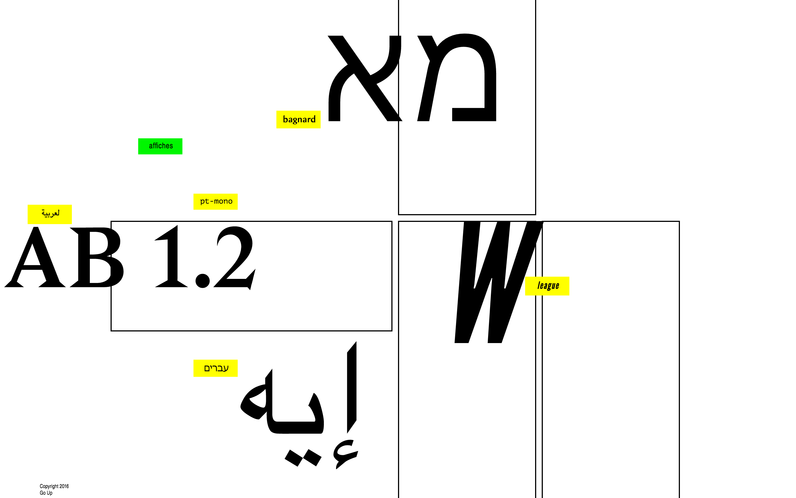
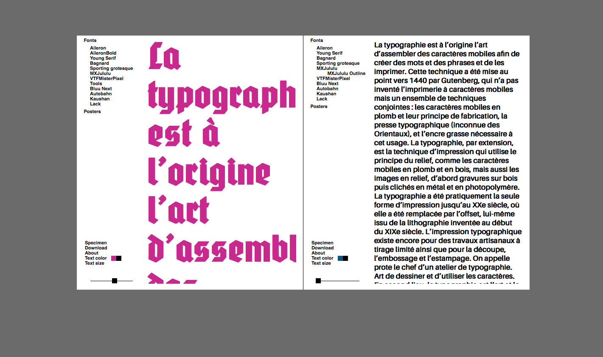

Une introduction
Elise Achard, Elisa Siro, Jean Gfeller, Nizar Kazan et Anthony Monnier
Nom du projet: Kilomètre / Heure
Le projet est une fonderie Open Service en ligne. Le but était de créer un espace de liberté sur une plateforme commune. La fonderie est axée sur un sytème de double-page afin de créer una analogie entre la version papier et le site web.
Le choix des fonts s’est fait en prenant compte des différents univers selon la vision des différents type designer. Chacune des fonts à été répartie entre les cinq personnes du groupe est déclinée par la suite en affiche.
Fontes utilisées • Bagnard • Bluu Next • Poppins • Reglo • RobotoVoir le projet.
Fontes utilisées • Terminal Grotesk • PaperWork • StandardGraff • Bagnard • CothanVoir le projet.
Aurélie Cornaz, Catarina Silva, Valentine Martin et Yoan Scheidegger
Nom du projet: Codes religieux revisités
 Ce projet se base sur les codes des différents écrits sacrés. Le groupe de travail c'est donc principalement inspiré du premier livre imprimé, soit, la bible. De ce fait, cela a permis la création d'une grille et de réutiliser les vignettes et numéros de versets du livre. Le texte à aussi été généré à partir d'écrits religieux repris de l'ouvrage. Pour montrer une variante de fontes venant de différentes cultures, le groupe s'est étendu à d'autres religions, telles que l'islamisme et le judaïsme.
Fontes utilisées • Bagnard • Lateef • League • PT Mono • TahomaVoir le projet.
Sofia Varga, Guillaume Besson, Beboît Ebener, Jeremy Maffeï et Thomas Carrel
Nom du projet: Confrontations typographiques
 Ce projet rejoint l'esthétique du programme Indesign. En effet, ce logiciel permet le lien web–print. Un système de doubles pages s'est rapidement mis en place pour présenter les fontes sélectionnées. L'attrait de ce site réside dans la confrontation de ces fontes. Le choix de celle-ci réside dans leurs particularités stylistiques et dans la variété des designers. Une série de posters a été réalisée en suivant une systématique propre à la fondrie créée. Ainsi, la confrontation des fontes est toujours présente et les posters reconnaissablent dans un tout.
Fontes utilisées • Aileron • Autobahn • Bagnard • Bluu • Kaushan • Lack • Misterpixels • MxJululu • Sporting Grotesk • Soung-sérifVoir le projet.